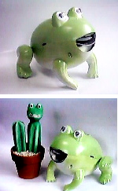
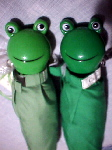
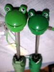

|
カエル標準塗装でカエルメカフロッグ迫力！ 【埼玉発=ケロッピー・セブン同志記者】平成12年10月6日号で紹介されたメカフロッグはお気に入りなのですが、色が今ひとつなじめません。そこでカエル標準色に彩色してみました。背中のタンクを外して全身を丹念に白で塗ってから、黄緑のスプレーで仕上げました。塗るときに目玉と電極、機構部分はマスキングします。さらにつま先に滑り止めのゴムを貼ります。これで板の間での前進のスピードは倍になります。
カエル標準色採用でぐっとリアルに！【全国かえる奉賛会】メカニックな印象が強かったケロケロメカフロッグだが、ケロッピー・セブン同志の着色により、ぐっとリアルなカエルになった。このまま本物のカエルの中に入れても、まったく違和感ないであろう。売れ行きが心配されている、ケロケロメカフロッグなので、優れた設計者を勇気づけるためにも『緑色着色タイプの生産ライン投入』を、生産工場に提言しようではないかああああああああああ。
また、チューンナップして前進性能の強化を果たした点もすばらしい。みんなも、ケロケロメカフロッグの改造をして、２００２年ロボカップに『かえるチーム』として殴り込みをかけようではないかあ。 可愛いーーーっつ！カエル傘！  【福岡発=すみちゃん様】バレンタインデーのチョコを捜していたら、カエル傘を発見したので、買いましたー。５００円でしたー。可愛いーっ！絶対に使って下さいね。【福岡発=まどか様】もー見たとたんに『これだあああああ』って思いました。もちろん即買いました。
【全国かえる奉賛会】相次いで２人の人から、プレゼントされたぞ。しかも、同じ緑色でも、微妙に色が違うのがうれしいではないかあああ。雨が降った日に使おうと思うけど、なんか可愛くて『こわれたらどうすんだー』と心配になり、持ち歩くものの、実際にさすのは１００円傘だったりする。
風雨で骨が折れたら大変だもんね。晴天の日に持ち歩こうかな！
携帯にはカエルのモローストラップ！【福岡発=走るかえる同志記者】携帯電話持っている人が、このごろさらに急激に増えているらしい。ということで、新型携帯を手にしたら、ストラップはカエルにしましょーっ！けろテン市場で発売しているので、モローストラップで同僚と差をつけようではありませんかあ。
宇宙飛行士目指しアマミアオガエル特訓中！【兵庫発=keromura＠同志記者】お昼休みに『2001年3月19日（月） 10時45分 “宇宙酔い”解明に一役 アマミアオガエル ただ今特訓中 (西日本新聞)』というネットニュースをみつけ、お知らせしたくってつい送ってしまいました。鹿児島県奄美大島産のアマミアオガエルが宇宙実験の候補として、宇宙を目指し“特訓”を重ねているそうなんです。 なんでも、お腹が透明なので、内臓の変化を観察しやすいそうですね。実験訓練している教授によると「アマミアオガエルはいつでも宇宙に行けるよう準備している」と話しているそうです。がんばれカエル初の宇宙飛行蛙！ 気になるカエル！君の名は？【日本発=どんがめ＠デスクトップ君同志記者】お唐突に失礼します。実は添付しました画像のカエルの名前をご存じありませんか？もし知っておられましたら教えていただきたいのですが。どうしても知りたいのでよろしくお願いします。
【全国かえる奉賛会】大王もわからないので、公開捜査に踏み切ることにしました。分かった人はおしえてあげてくれー。
投稿採用者に武功カエル徽章を授与！ |
かえる古新聞過去に取り上げた記事を見出し付きで一覧したい人は、ここをクリック◆創刊号を見る◆先週号を見る◆話題の号を見る◆かえる新聞の昔を読む◆COOL NET FROG RANKING !
|
私も入っています。。全国かえる奉賛会
大王様に会うには、このバナーをクリック。ずっと奥に写真館があるぞ。全国かえる奉賛会に入会するには、自分のホームページのどこかに、下の部分を追加するとバナーがリンク付きで表示されるぞ。どんどん入会しましょー |


|